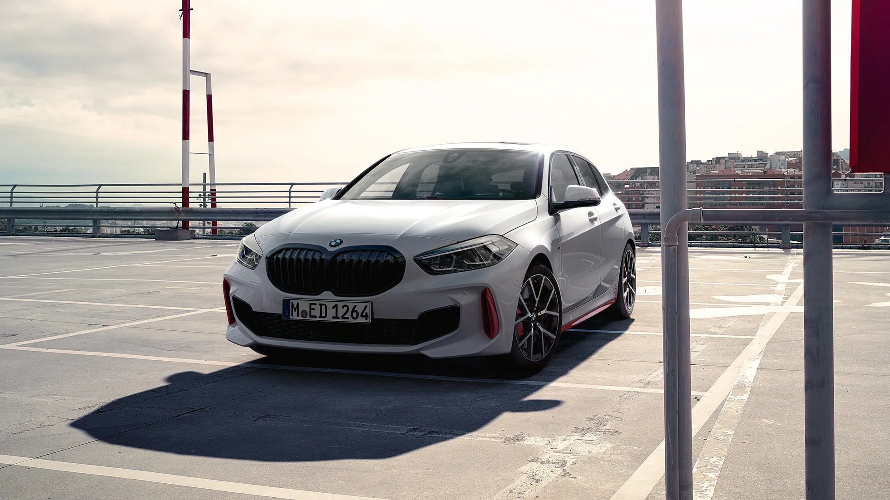

INICIO
Blog Post
Los Mejores Hot Hatches del Año
Este año, el panorama de los hot hatch se ha visto invadido por modelos que no solo elevan el listón en términos de rendimiento y eficiencia, sino que también redefinen lo que significa la practicidad mezclada con pura emoción al volante.
Desde el indomable Honda Civic Type R, con su precisión quirúrgica en curvas, hasta el innovador Volkswagen Golf GTI, que continúa su legado con una mezcla magistral de tecnología y potencia, estos vehículos destacan en el escenario actual.
El Ford Focus ST, con su equilibrio perfecto entre comodidad y capacidad deportiva, también hace una aparición estelar, demostrando que la evolución de los hot hatches no conoce límites. Estos modelos, seleccionados por nuestro blog este año, no solo son un testamento de la ingeniería avanzada y el diseño audaz, sino también de una cultura automotriz que valora la alegría de conducir. En un mundo donde los autos tienden a volverse cada vez más homogéneos, los hot hatch se mantienen como símbolos vibrantes de individualidad y placer de conducción.
 El BMW 128ti, con su tracción delantera y un enfoque en la diversión de conducir, se establece como un fuerte competidor en el mercado de los hot hatches, ofreciendo una experiencia dinámica y emocionante al volante.
 El Mini John Cooper Works representa el espíritu deportivo en un formato
compacto, combinando un diseño icónico con un rendimiento excepcional,
lo que lo hace destacar en el segmento de los hot hatches.
El Mini John Cooper Works representa el espíritu deportivo en un formato
compacto, combinando un diseño icónico con un rendimiento excepcional,
lo que lo hace destacar en el segmento de los hot hatches.
 El Ford Focus RS lleva la experiencia de los hot hatches a otro nivel
con su tracción integral y su potente motor.
El Ford Focus RS lleva la experiencia de los hot hatches a otro nivel
con su tracción integral y su potente motor.
 El Mercedes-AMG A35 destaca por su diseño agresivo y su impresionante
manejo, que lo convierten en uno de los favoritos de la categoría.
El Mercedes-AMG A35 destaca por su diseño agresivo y su impresionante
manejo, que lo convierten en uno de los favoritos de la categoría.
Volver al inicio